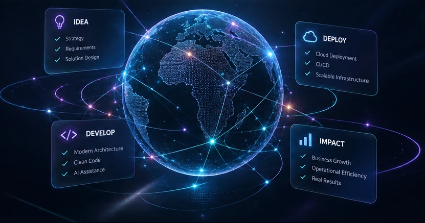
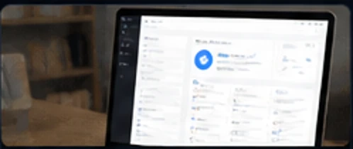
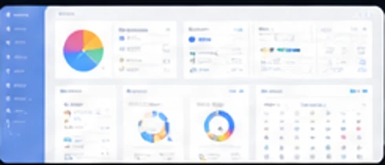

Web Application Development
Scalable, secure and high-performance web applications using modern technologies like React and .NET.
→Koranyq is a technology consultancy building modern web, mobile and AI-powered solutions for businesses that want to work smarter, scale confidently and create meaningful impact.

WHAT WE DO
We help businesses transform through custom software development, modern web and mobile applications, and practical AI-powered solutions.
Scalable, secure and high-performance web applications using modern technologies like React and .NET.
→Cross-platform mobile experiences built with React Native for iOS and Android.
→AI-powered applications, agent workflows, model integration, evaluation and intelligent automation.
→Cloud deployment, CI/CD pipelines, integrations and infrastructure optimization on Azure and modern platforms.
→FEATURED SOLUTIONS
A selection of technical domains and software systems represented in our engineering experience.
View Our Experience
Case management, client onboarding, document handling and workflow automation.
Connecting customers with nearby service providers through platform workflows.
Ride requests, live tracking, communication and dispatch architecture.

Academic management, reporting and analytics for education workflows.
Illustrative interface visuals. Project examples reflect professional engineering experience and product work, not a claim that every system is a publicly launched Koranyq client product.
HOW WE CREATE VALUE
Every engagement begins with understanding the business. We help define the scope, design the architecture, implement the solution and validate it through delivery.
Discuss your challengeGoals, requirements, existing processes and success criteria.
Secure, maintainable systems designed for real constraints.
Incremental delivery, testing and transparent collaboration.
Reliable releases, observability and ongoing improvements.
ABOUT KORANYQ
Koranyq is led by Robert Karuku, a full-stack and LLM engineer with 6+ years of experience across enterprise applications, API architecture, technical leadership and AI engineering. Our approach combines rigorous software development with an understanding of how businesses actually operate.
Experience spans .NET, React, React Native, cloud services, and LLM integration work, including previous AI engineering work with Turing.
Modern technology. Sensible architecture. Measurable business value.
LET’S BUILD SOMETHING THAT MATTERS
Tell us about your goals, timeline and business challenge. Start with a focused conversation about what success looks like.